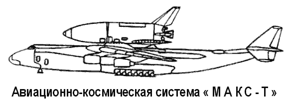
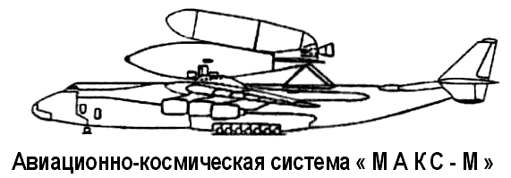
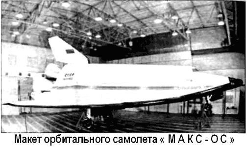

Проект «МАКС»
В 1982 году, задолго до первого и последнего полета системы «Энергия-Буран», Генеральный конструктор НПО «Молния» Глеб Лозино-Лозинский, оценив перспективы создания авиационно-космических систем и обобщив свой опыт работы над космопланом «Спираль», предложил новый проект, получивший название «МАКС», то есть «Многоразовая авиационно-космическая система».
В 1988 году большой кооперацией (около 70 предприятий авиационной и космической промышленности) был разработан эскизный проект системы «МАКС» в 220 томах.
В подтверждение проектных технических характеристик выполнен большой объем исследовательских работ по аэродинамике, газодинамике, прочности элементов конструкции и другим направлениям.
Система «МАКС» состоит из дозвукового самолета-носителя и установленной на нем орбитальной ступени с внешним топливным баком. В качестве первой ступени «МАКС» планируется использовать тяжелый самолет «Ан-225» («Мрия») или (в перспективе) сверхмощный двухфюзеляжный самолет «Геракл».
Самолет «Мрия» чрезвычайно удобен тем, что он уже неоднократно испытывался как транспортная платформа при дальних перевозках орбитального корабля «Буран». При максимальной взлетной массе в 600 тонн «Ан-225» может поднимать полезный груз до 250 тонн, развивая при этом скорость 850 км/ч на высоте от 9000 до 11 000 километров.
По вариантам второй ступени система «МАКС» имеет три модификации: «МАКС-ОС», «МАКС-Т» и «МАКС-М».
Вторая ступень «МАКС-ОС» состоит из орбитального самолета многоразового использования и одноразового топливного бака.
Габариты орбитального самолета «МАКС-ОС»: длина — 19,3 метра, размах крыла — 13,3 метра, высота — 8,6 метра, масса — 27 тонн.
При этом стартовая масса всей системы составляет 620 тонн, 2-й ступени — 275 тонн, а полезной нагрузки, выводимой на орбиту до 400 километров, — 5,8–6,6 тонны.
Маршевая двигательная установка включает в себя два двигателя «РД-701», работающих на трехкомпонентном топливе (жидкий водород, керосин и жидкий кислород). Базовый пилотируемый вариант самолета «МАКС-ОС» имеет кабину для двух членов экипажа.
Разработаны варианты самолета «МАКС-ОС» для транспортно-технического обеспечения орбитальных станций. Вариант «ТТО-1» оборудован стыковочным модулем и второй герметичной кабиной на четырех человек. Вариант «ТТО-2» предназначен для доставки в негерметичном отсеке оборудования, устанавливаемого на наружной стороне орбитальных станций.
Для выведения на орбиту тяжелых (до 18 тонн) полезных нагрузок предназначена модификация «МАКС-Т», имеющая вторую беспилотную ступень одноразового применения.

В ней используется тот же внешний топливный бак, что и на «МАКС-ОС», только вместо орбитального самолета установлен закрытый обтекателем полезный груз с маршевым двигателем.
Вторая ступень «МАКС-М» представляет собой многоразовый беспилотный орбитальный самолет. Топливные баки «МАКС-М» включены в конструкцию самолета.
«МАКС-ОС», «МАКС-Т» и «МАКС-М» должны по мере создания вводиться в совместную эксплуатацию на основе единых самолета-носителя и наземной инфраструктуры. Многоразовое применение их составных элементов и высокая степень унификации орбитальных ступеней обеспечат достижение основной цели разработчиков — многократного, по сравнению с существующими системами, снижения стоимости транспортных космических операций. Система «МАКС» позволит снизить стоимость выводимых в космос грузов до 1000 долларов за килограмм (против 12 000-15 000 долларов за килограмм у одноразовых систем).
Система базируется на обычных аэродромах 1-го класса, дооборудованных необходимыми для «МАКС» средствами заправки компонентами топлива, наземного технического и посадочного комплекса, и в основном вписывается в существующие средства наземного комплекса управления космическими системами.
В настоящий момент изготавливаются натурные макеты орбитального самолета и внешнего топливного бака. Разработка конструкторской документации по этим двум элементам практически завершена.

Для снижения технического риска создания полномасштабной системы «МАКС» и для равномерного распределения во времени финансовых затрат признана необходимой oпeрежающая разработка сравнительно недорогой экспериментальной системы-демонстратора технологий.
Исследования по первому варианту демонстратора «РАДЕМ» («RADEM») проводились в 1993–1994 годах НПО «Молния» совместно с фирмами «Бритиш Аэроспейс», АНТК Антонов и ЦАГИ по заказу Европейского космического агентства Современный вариант суборбитального демонстратора «МАКС-Д» также разработан с использованием задела по «РАДЕМ» и на базе конструкции и аэродинамической компоновки «МАКС-ОС». Взлетная масса экспериментального самолета — 62,3 тонны, посадочная — 12,8 тонны. В отличие от «РАДЕМ» в суборбитальном самолете «МАКС-Д» маршевая двигательная установка состоит лишь из одного кислородно-керосинового двигателя, что не только упрощает проект, но и, при заданных объемах баков, повышает энергетические возможности демонстратора При помощи демонстратора будут отработаны технологии и элементы системы выведения «МАКС» и исследованы в реальных условиях предстартовый маневр носителя, разделение ступеней, начальный участок выведения и автоматическая посадка орбитальной ступени. Помимо этого он может быть использован как летающая лаборатория для испытания перспективных воздушно-реактивных двигателей.
В проекте участвует и Летно-исследовательский институт имени Громова. Так, для системы «МАКС» там планируется создать и испытать самолет-лабораторию на базе истребителя «Су-27».

К настоящему времени на разработку системы «МАКС» израсходовано около 1,5 миллиарда долларов. Для того чтобы получить первый летающий образец, требуется еще около 1,8 миллиарда.
На состоявшемся в ноябре 1994 года в Брюсселе Всемирном салоне изобретений, научных исследований и промышленных инноваций «Брюссель-Эврика-94» программа «МАКС» получила золотую медаль и специальный приз премьер-министра Бельгии.